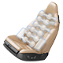
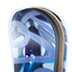
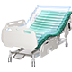
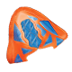

-
輕巧無感，強韌無比
輕巧無感，強韌無比
為了打造出足球鞋界的霸主，領導球鞋廠商利用鼎基的高科技膜製造出功能獨霸天下，而且輕到令人忘了它存在的足球鞋。
Orkesta™
利用Orkesta™ Composite 高科技膜做成強韌、堅固的外層，讓產品的時尚感輕盈得恰到好處。Orkesta™高科技膜是輕巧耐用型產品的最佳選擇。
-
極致奢華，全面啟動
極致奢華，全面啟動
鼎基協助汽車業領導廠商，打造從裡到外散發極致華麗氣息的豪華汽車。因此，鼎基用高科技膜製造出頂級車墊的背部支撐系統骨架。
Provecta™ | Orkesta™
Provecta™ 高科技膜的高耐用性與防漏性很適合應用在充氣式按摩坐墊。鼎基Orkesta™ 高科技膜亦被廣泛用來製造時尚、耐用的汽車坐墊外層。
-
天籟之音，可遇亦可求
天籟之音，可遇亦可求
音響玩家都知道喇叭內的材料會影響音效品質。因此，追求高品質與耐用性的製造商都選擇用鼎基的材料打造出高性能的音響。
Provecta™
Provecta™ 高科技膜彈性十足，性能遠勝其他TPU膜。Provecta™高科技膜的堅固與耐用性能讓家用音響、智慧型手機與其他裝置持續放送高音質。
-
腳踏世界，享受競速
腳踏世界，享受競速
國際滑雪板大廠想在滑雪板上印製各種精心設計的圖案。在雙方共同的創意激盪下，鼎基開發出能在滑雪板上印出夢想中的圖案，以及不褪色的高科技膜。
Provecta™
Provecta™ 高科技膜能真實呈現鮮豔色彩與細膩線條，是印製各種絢麗圖案的最佳材料。Provecta™ 高科技膜的耐用性是色彩與圖案永保鮮豔清晰的秘訣。
-
醫療照護，事半功倍
醫療照護，事半功倍
隨著醫療照護的發展，鼎基的高科技膜亦被應用在許多醫療用途上，例如醫療床墊等。鼎基的高科技膜也能嵌入生物感測器，未來將會是醫護人員看護病人的好幫手。
Provecta™
Provecta™ 高科技膜的衛生、防水與耐用性是醫療產品的最佳選擇，同時也是內嵌生物感測器的最佳材料。
-
科技上身，如影隨形
科技上身，如影隨形
穿戴式技術的未來已成定局，鼎基的高科技膜已廣泛應用在各種尖端穿戴式技術上，例如在高科技膜中嵌入生物感測器，並做成運動頭盔的緩衝墊，舒適感、耐用性、撞擊力監控都可一把抓。
Provecta™
鼎基的高科技膜質輕耐用，是內嵌晶片與生物感測器的最佳媒介。鼎基的高科技膜防水又防汗，是製作運動用穿戴式裝置的最佳材料。
-
致勝完美的射門
致勝完美的射門
經過某知名運動品牌的設計巧思，我們的 Provecta™ Adhesive 高科技膜化身為全球最先進的無接縫足球，不僅創造出新的踢球方式，更藉由科技與足球兩大元素的完美融合，塑造出頂級的黃金足球。
Provecta™
Provecta™ 高科技膜可用熱熔膠方式貼合，能大幅減少生產過程中的裁剪和縫接步驟，因此可加速生產速度、降低勞工成本、增加營收利潤，並減少材料浪費。
-
球鞋新革命
球鞋新革命
在鼎基協助下， 某大鞋廠使用我們的Provecta™ Adhesive 高科技膜，打造出全球第一雙無縫籃球鞋。Provecta™ Adhesive 高科技膜改寫了製鞋歷史。首創無縫籃球鞋的生產流程，更開啟了鞋業的新樂章。
Provecta™
Provecta™ 高科技膜讓鞋子更輕巧、更耐穿。我們的薄膜生產技術也為頂級運動鞋樹立了新標竿。
-
緊實不漏氣
緊實不漏氣
Provecta™ 高科技膜無懈可擊的密合度，非常適用於製作氣墊、充氣船與救生衣。不論是一體成形的 Provecta™ 膜，或是與其他材料焊接，都能提供堅固、防漏的密合度。
Provecta™
Provecta™ 高科技膜能與各種材質黏貼，不論是泡棉或布料，都能穩固密合，因此能應用在有氣密需求的產品。
-
輕巧又犀利
輕巧又犀利
許多相機大廠已捨棄使用傳統PVC製造相機鏡頭，轉而投向 Provecta™ 高科技膜的懷抱，因為Provecta™ 高科技膜薄到讓人忘了它的存在，加上優異的阻光效果，讓相機邁向極致輕薄的新境界，鏡頭的縮放功能也大幅躍進。
Provecta™
靠得住的輕巧。輕薄又有效。Provecta™ 高科技膜引發產品設計大革命，讓產品精巧化，卻又不失效能。
-
緩震有一套
緩震有一套
運動用品領導廠商發揮創意，將 Provecta™ 高科技膜做成運動頭盔的避震襯墊，不僅能大幅降低震盪衝擊，還兼具衛生與透氣散熱的效果。
Provecta™
Provecta™ 高科技膜具有卓越的韌性與耐用性，以及絕佳的抗菌功效，是運動用品與戶外器材的最佳選擇。
-
療傷速見效
療傷速見效
我們的醫療用薄膜與泡棉已廣泛應用在傷口治療上。使用Provecta™ 醫療用薄膜與泡棉製成的新型繃帶能吸收體液，同時讓傷口保持滋潤。Provecta™ 的保護功效與透氣性可加速傷口癒合。
Provecta™
Provecta™ 高科技膜的柔軟度、高延展性與高透氣性無出其右，且不含導致皮膚過敏的塑化劑。因此，我們的醫療用薄膜與泡棉已被廣泛應用在傷口治療上。